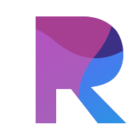

Brand mark · motion study
Recall
Your memory, encrypted.
A true wave fills the R: the tide rises over 5s, a pink wash crosses it over 5s, and both surfaces shiver on 1.8s and 2.1s loops. The gradient cycles through violet, blue, cyan, and pink every 6s.

1632
48
96
Motion on
Static app, toolbar, and launcher icons use the non-animated mark. This page is inspiration for the landing page, popup, and desktop shell only.